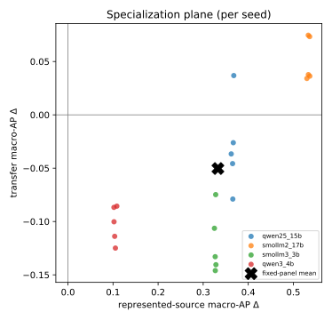

The Benchmark Chooses the Winner: Measuring Fine-Tuning Specialization Across Safety-Guard Benchmarks
Small language models are increasingly adapted into binary prompt-safety guards, but improvement on benchmark sources represented during training does not establish transferable guard capability. We measure what LoRA-SFT adds beyond the untuned base using paired base-versus-adapted comparisons on four checkpoints from 1.5B to 4B parameters. We hold the prompt interface, training manifest, LoRA capacity, and evaluation rows fixed; repeat training across five seeds; and separate represented-source tests from dataset-held-out benchmark transfer. Evaluation uses macro average precision, per-source effects, calibration-only operating points, and uncertainty over both training runs and evaluation datasets.
Under the locked protocol, SFT changes represented-source macro AP by \(+0.325\) (95% one-sided lower bound \(+0.281\)) and transfer macro AP by \(-0.050\) (95% one-sided upper bound \(-0.029\)). The transfer effect is heterogeneous across checkpoints—from \(+0.05\) on one base to \(-0.12\) on another—though the panel-level degradation is sign-stable under every leave-one-checkpoint-out and leave-one-benchmark-out resampling. At a calibration-targeted 5% FPR, the adapted guard’s realized false-positive rate rises to 13.7% on transfer benchmarks (versus 8.3% for the untuned base), so the calibrated operating point does not transfer, with realized test FPR reported rather than assumed.
Prior work has established policy overfitting, calibration sensitivity, and safety degradation after fine-tuning. Our contribution is narrower: a same-checkpoint, same-training-manifest, multi-seed attribution of how compact prompt guards specialize across benchmark sources. The results show that adapting a guard is, on this panel, an in-source specialization—it reliably sharpens discrimination on represented benchmark sources while, on average and stably across leave-one-out checks, slightly degrading dataset-held-out transfer—rather than a general moderation upgrade.
1 Introduction
Teams increasingly convert a general instruction model into a safety guard with a short parameter-efficient fine-tune, then report the adapted guard’s score on a public benchmark suite. A post-adaptation leaderboard number, however, hides the quantity a practitioner actually needs: what the fine-tune added relative to the same checkpoint before adaptation, and whether that addition is competence that transfers to data the guard was not trained on, or specialization toward the sources that happened to be represented during training. Because an adapted guard is usually compared only against other models — never against its own untuned base — a gain measured on benchmark sources represented during training is easily mistaken for transferable guard capability.
This paper asks one question: what does LoRA-SFT add beyond the untuned base model, and does that gain transfer to evaluation datasets whose rows were not used for SFT? To answer it we run a controlled, same-checkpoint, same-training-manifest, multi-seed study on a fixed four-checkpoint panel (Qwen2.5-1.5B, SmolLM2-1.7B, SmolLM3-3B, Qwen3-4B) and one frozen LoRA-SFT recipe, comparing every adapted guard against its own untuned base across two evaluation regimes: benchmark sources represented during training and dataset-held-out benchmarks whose rows were withheld from SFT.
Our result-neutral thesis, stated before any scoring, is the following.
For a fixed four-checkpoint panel and one frozen LoRA-SFT recipe, guard adaptation changes performance differently on represented-source and dataset-held-out tests. Comparing every guard with its own untuned base reveals whether adaptation adds transferable competence or redistributes performance toward sources represented during training.
After scoring, the conclusion follows the preregistered decision rules of §6; a heterogeneous or inconclusive outcome is reported as such and is not forced into a negative-transfer narrative.
1.0.0.1 Scope.
The study is deliberately narrow: English input-prompt classification, binary safe/unsafe decision-token scoring, small instruction models from 1.5B to 4B parameters, one fixed LoRA-SFT recipe, three represented-source datasets, four dataset-held-out transfer benchmarks, two single-class stress sets, and a fixed, purposively chosen four-checkpoint panel. It is not a guardrail leaderboard, an objective comparison, an ensembling study, a fairness audit, a frontier-API parity or latency study, or a domain-compliance case study; those questions — including the mortgage-compliance case study — are out of scope here and are treated in separate work. Response, tool-call, and full-dialogue moderation, arbitrary unseen policies, production traffic, and universal claims about fine-tuning are likewise out of scope.
1.1 Contributions
The paper makes exactly three contributions.
Controlled base-to-guard attribution. For each checkpoint, we compare the untuned base with five independently trained SFT adapters on identical examples, prompts, score definitions, and metrics, so any measured change is attributable to the adaptation rather than to a different model, threshold, or evaluation set.
Fixed-panel transfer characterization. We estimate represented-source and dataset-held-out changes separately, report per-base and per-benchmark heterogeneity, and restrict every conclusion to the named four-checkpoint panel and frozen recipe.
Auditable measurement package. We release immutable manifests or redistributable identifiers, source revisions, content hashes, seed-level results, keyed scores, direct paired intervals, generated tables and figures, and an executable cached-analysis path.
Operating-point evaluation (4.3) is supporting methodology, not a contribution: it is a secondary deployment diagnostic and does not provide a distribution-free production guarantee.
1.2 Research questions
The single question above is operationalized as four preregistered research questions.
- RQ1 (represented-source effect).
-
For the fixed four-checkpoint panel, how does a common LoRA-SFT recipe change macro average precision on benchmark sources represented during training?
- RQ2 (benchmark-transfer effect).
-
How does the same adaptation change macro average precision on dataset-held-out transfer benchmarks?
- RQ3 (heterogeneity).
-
Are the represented-source and transfer changes stable across checkpoints and evaluation datasets, or are they concentrated in particular bases and benchmarks?
- RQ4 (deployment sensitivity).
-
What TPR/FPR trade-off do the base and SFT systems realize when thresholds are selected on calibration data at a nominal 5% pooled-negative FPR target?
RQ4 is descriptive and secondary: it does not provide a distribution-free production guarantee, and failure to obtain a feasible threshold under the prespecified bound is a reportable outcome rather than grounds for selecting a threshold on test data.
3 Controlled Study Design
Figure 1 summarizes the pipeline: pinned source snapshots are compiled into frozen manifests, audited for overlap and license, and locked; four bases are each adapted with five SFT seeds; the base and adapted guards are scored on the represented-source, transfer, and stress manifests; and paired deltas feed the preregistered claim gates. No stage reads evaluation labels before the final scoring pass.
3.1 Prompt-safety task and label mapping
The guard is a binary classifier that emits a single-token verdict,
safe or unsafe. A prompt is
unsafe if it should be blocked (harmful content, successful
jailbreak/injection, policy-violating request) and safe
otherwise. Each source’s native label is mapped to this binary target by
a frozen rule: ToxicChat toxicity\(=1\!\to\!\)unsafe;
deepset/prompt-injections label\(=1\!\to\!\)unsafe;
jailbreak-classification type beginning
jailbreak\(\to\!\)unsafe;
JailbreakBench harmful/benign splits; XSTest contrast prompts\(\to\!\)unsafe; WildGuardTest
prompt_harm_label; WildJailbreak integer label;
OR-Bench-Hard benign portion (safe); HarmBench (unsafe). All
native-to-binary maps, text fields, and per-source deterministic targets
are fixed in configs/paper_a_sft.yaml and recorded in the
manifest.
3.2 Guard formulation: a single-token logprob head
The guard treats safety classification as a single next-token
prediction. A prompt \(x\) is wrapped
in one versioned instruction template shared across every base and seed,
and the model is asked for a one-word verdict. Rather than sampling
text, we read the last-position logits and restrict attention to the two
verdict tokens. Let \(z_{\text{safe}}(x,t)\) and \(z_{\text{unsafe}}(x,t)\) be those logits at
the final prompt position \(t\). The
stored canonical score is the logit difference \[\begin{equation}
\label{eq:score}
s(x) = z_{\text{unsafe}}(x,t) - z_{\text{safe}}(x,t),
\end{equation}\] and the derived probability is the two-way
softmax \[\begin{equation}
\label{eq:prob}
p(\text{unsafe}\mid x) =
\frac{\exp(z_{\text{unsafe}})}{\exp(z_{\text{safe}}) +
\exp(z_{\text{unsafe}})}.
\end{equation}\] Raw safe/unsafe logits
are the canonical stored values; probabilities and any
temperature-scaled calibration are derived from them. Generated verdict
text is never used as the primary score. For each checkpoint we verify
that the decision tokens are distinct single tokens under a fixed
convention (leading-space " safe"/" unsafe"
first, no-leading-space fallback), and we store token IDs, token
strings, truncation state, and scored/original token counts. Training,
scoring, and tests import the same prompt/token specification.
3.3 Training manifest and exclusions
Training reads one frozen 1,200-row manifest and never
resamples live datasets. The manifest draws 400 rows
each from three represented sources — ToxicChat,
Prompt-Injections, and Jailbreak-Classification — with 200 safe
and 200 unsafe rows per source, selected deterministically by a
frozen SHA-256 hash-ranking rule salted with data_seed and
shared as one fixed row order across every checkpoint and training seed.
At effective batch size 4, 1,200 rows produce exactly 300
optimizer updates for one complete exposure of the manifest.
BeaverTails and OR-Bench are excluded from training.
BeaverTails’ is_safe annotation labels the prompt–response
interaction rather than the prompt alone, and OR-Bench is reserved for
the benign stress set and shares an evaluation family; including either
would confound the prompt-only, dataset-held-out design. The study uses
the non-commercial academic data branch (ToxicChat is CC BY-NC 4.0), so
any released adapter is marked non-commercial and third-party raw text
is redistributed as pinned identifiers, revisions, and content hashes
rather than under the repository license.
Decontamination audit. Before locking, an audit
compiles union family clusters across all candidate rows: an edge is
added between rows sharing an authoritative upstream
family/conversation/pair/scenario ID and between rows whose character
5-gram MinHash (256 permutations) estimates Jaccard similarity \(\ge 0.85\); connected components define
family_id; every component crossing train and any
evaluation split is adjudicated, and the train-side member of an
unresolved cross-split component is removed. The audit enforces hard
assertions — or_bench_train_count\(=0\),
beavertails_train_count\(=0\), exact train/eval overlap \(=0\), conflicting-label overlap \(=0\), and complete
revision/hash/near-duplicate-disposition coverage — and reports
sensitivity counts at similarity 0.80 and 0.90. On the current build the
audit reports 0 exact train/eval overlap, 0
conflicting-label overlap, and the removal of 4
WildJailbreak conflict rows from the training candidates.
Because these are audited data-pipeline properties rather than model
outcomes, they are stated here; all post-audit split counts are
published in the manifest report.
configs/paper_a_sft.yaml; represented-source test rows are
split 40/60 into calibration and represented-source ID, and their final
post-audit counts are published in the manifest report. Model-checkpoint
revisions are in Table 2;
dataset revisions and content hashes are pinned in the config. “see
manifest” marks a license that is recorded and snapshotted at lock
time.| Source (Hugging Face) | Native label origin | Role | Count (target) | License |
|---|---|---|---|---|
lmsys/toxic-chat |
prompt toxicity | train \(+\) calibration/ID | 400 train (200:200) | CC BY-NC 4.0 |
deepset/prompt-injections |
prompt injection | train \(+\) calibration/ID | 400 train (200:200) | see manifest |
jackhhao/jailbreak-classification |
prompt jailbreak | train \(+\) calibration/ID | 400 train (200:200) | see manifest |
JailbreakBench/JBB-Behaviors |
harmful/benign split | transfer (test only) | 120 (60:60) | see manifest |
natolambert/xstest-v2-copy |
contrast prompt | transfer (test only) | 240 (120:120) | see manifest |
allenai/wildguardmix |
prompt harm label | transfer (test only) | 800 (400:400) | ODC-BY \(+\) AI2 |
allenai/wildjailbreak |
adversarial label | transfer (test only) | 420 (\(\approx\)210:210) | ODC-BY \(+\) AI2 |
bench-llm/or-bench
(hard-1k) |
benign over-refusal | stress: benign FPR only | 400 (0:400) | see manifest |
walledai/HarmBench |
harmful | stress: recall only | 200 (200:0) | see manifest |
3.4 Model panel and frozen SFT recipe
The estimand is a fixed, purposively chosen four-checkpoint panel; we do not bootstrap model identities or infer over model families. All four checkpoints, their pinned revisions, and the locked LoRA-SFT recipe are in Table 2. Each base is adapted with five training seeds (42–46) sharing a fixed data-order seed (42), giving 20 adapters; the four untuned bases are scored once each and reused across comparisons (\(4\) bases \(+ 20\) adapters \(= 24\) model bundles). The recipe is frozen before final scoring: completion-only SFT with the loss on the verdict token plus the appended EOS token, LoRA \(r{=}32\), \(\alpha{=}64\), dropout \(0.05\) on the q/k/v/o/gate/up/down projections, 300 optimizer updates, learning rate \(2\times10^{-4}\) with cosine schedule and 0.03 warmup, per-device batch 1 with gradient accumulation 4 (effective batch 4), and maximum sequence length 1,024.
main. Decision tokens are verified distinct single tokens
per checkpoint under the leading-space-first convention (exact token IDs
recorded in LOCK.json). Trainable-parameter counts,
training tokens, and wall time are per-run metadata filled from run logs
after training; they are not evaluation results.| Checkpoint | Params | Revision (pinned) | Decision tokens | Tokens seen / wall time |
|---|---|---|---|---|
| Qwen/Qwen2.5-1.5B-Instruct | 1.5B | 989aa79…71aa306 |
{ safe, unsafe } single-token | 215k / 7.0 min |
| HuggingFaceTB/SmolLM2-1.7B-Instruct | 1.7B | 31b70e2…46d38674 |
{ safe, unsafe } single-token | 226k / 6.8 min |
| HuggingFaceTB/SmolLM3-3B | 3B | a07cc9a…335b0ac1 |
{ safe, unsafe } single-token | 259k / 10.3 min |
| Qwen/Qwen3-4B | 4B | 1cfa9a7…03b3df60c |
{ safe, unsafe } single-token | 220k / 11.8 min |
| Recipe (all cells): completion-only SFT (verdict \(+\) EOS); LoRA \(r{=}32\), \(\alpha{=}64\), dropout \(0.05\); q,k,v,o,gate,up,down; | ||||
| 300 steps; lr \(2\times10^{-4}\) cosine, warmup 0.03; effective batch 4; max len 1,024; seeds 42–46; data-order seed 42. | ||||
3.5 Evaluation regimes
We use precise regime terminology and avoid “fair,” “uncontaminated,” and “source-family OOD.” Three regimes partition evaluation.
Represented-source = {ToxicChat, Prompt-Injections, Jailbreak-Classification} test rows, held back from training. These measure discrimination on sources represented during training.
Dataset-held-out transfer = {JailbreakBench, XSTest, WildGuardTest, WildJailbreak}, whose rows were withheld from SFT. These benchmarks use heterogeneous native label constructs and may share conceptual or data-generation lineage, so we study dataset-held-out benchmark transfer, not source-family independence or a single fixed policy.
Stress = {OR-Bench-Hard benign portion (false-positive rate only), HarmBench (recall only)}. These are single-class sets: no AP or AUROC is computed on stress data, and the confounded OR-Bench-Hard benign/unsafe hybrid is never used for AP.
The primary metric is benchmark-macro average precision within each regime; the secondary metric is the calibration-targeted 5% FPR operating point (4.3).
3.6 Estimands and statistical protocol
For regime \(R\), checkpoint \(b\), and training seed \(r\), the per-regime metric is the macro
average precision over that regime’s benchmarks, \[\begin{equation}
\label{eq:regime-metric}
M_R(b,r) = \frac{1}{|K_R|}\sum_{k\in K_R} \mathrm{AP}_k(b,r),
\end{equation}\] computed with the tie-aware, non-interpolated
scikit-learn definition. The base-to-SFT change for a cell
is \[\begin{equation}
\label{eq:delta}
\Delta_R(b,r) = M_R(\mathrm{SFT}_{b,r}) - M_R(\mathrm{base}_b),
\end{equation}\] and the fixed-panel aggregate averages the four
checkpoint deltas without resampling checkpoint identities, \[\begin{equation}
\label{eq:agg}
\bar\Delta_R = \frac{1}{4}\sum_b\Big[\tfrac{1}{5}\textstyle\sum_r
M_R(\mathrm{SFT}_{b,r}) - M_R(\mathrm{base}_b)\Big].
\end{equation}\] The primary result is the joint vector \(\theta = (\bar\Delta_{\text{represented}},
\bar\Delta_{\text{transfer}})\); we do not collapse it into a
single scalar “specialization score” except as an optional
visualization.
Uncertainty. We separate training-seed uncertainty
from conditional evaluation-set uncertainty with a hierarchical paired
bootstrap: 10,000 replicates (RNG seed 20260712), the four
checkpoint identities fixed in every replicate, five SFT seed indices
resampled with replacement within each checkpoint, and one Poisson(1)
weight drawn per global family_id and applied to all of
that family’s rows across datasets (preserving cross-label,
cross-dataset, and paired base/SFT dependence). We report all five seed
values, per-base and fixed-panel intervals,
leave-one-transfer-benchmark-out and leave-one-base-out sensitivities
(descriptive, not population inference), and per-base/per-benchmark
heterogeneity tables.
Claim family and mode. The primary family is the
pair (represented-source macro-AP delta, transfer macro-AP delta), and
the specialization claim is an intersection–union test in which both
one-sided component nulls must be rejected at \(\alpha{=}0.05\). LOCK.json
records analysis_mode as powered_confirmatory
or precision_focused; in the latter, the same intervals are
computed but reported with estimation language rather than formal
rejection claims. We do not use McNemar as a test of AP, infer
significance from non-overlapping marginal intervals, treat seeds as
model families, or select any benchmark, seed, base, or threshold after
viewing final results.
4 Results
Every value in this section is generated from the locked-run
artifacts under artifacts/paper_a_sft/analysis; the
cached-analysis path regenerates every table and figure from the
row-keyed scores, and no number is hand-transcribed. The earlier pilot
figures (e.g. the 0.884 vs. 0.780 base/SFT aggregate from the prior
exploratory run) are not reused as evidence here.
4.1 Primary fixed-panel result (RQ1, RQ2)
Table 3 reports, per base, the untuned-base and mean-SFT macro AP in each regime, the paired base-to-SFT delta with its one-sided 95% interval, and the fixed-panel aggregate \(\theta = (\bar\Delta_{\text{represented}}, \bar\Delta_{\text{transfer}})\). Per-seed values for every cell are in the appendix seed table.
The pattern is uniform on represented sources and heterogeneous on transfer. Every checkpoint’s SFT variant reaches \(\approx\!0.98\) represented-source macro AP regardless of its base (which ranges 0.45–0.88), so the represented gain is largest for the weakest base (SmolLM2-1.7B, \(+0.534\)) and smallest for the strongest (Qwen3-4B, \(+0.104\)); the fixed-panel aggregate is \(\bar\Delta_{\text{represented}}=+0.325\) (95% one-sided LCB \(+0.281\)). On dataset-held-out transfer the effect reverses and varies by checkpoint: SFT lowers the transfer macro AP of the two strongest transfer bases (SmolLM3-3B \(-0.120\), Qwen3-4B \(-0.102\)), leaves Qwen2.5-1.5B statistically unchanged (\(-0.030\), interval crossing zero), and raises the weakest (SmolLM2-1.7B \(+0.051\)); the fixed-panel aggregate is \(\bar\Delta_{\text{transfer}}=-0.050\) (95% one-sided UCB \(-0.029\)). Both intersection-union gates therefore hold (§6), and the aggregate transfer degradation is sign-stable under every leave-one-checkpoint-out and leave-one-benchmark-out resampling. SFT thus equalizes represented-source discrimination across bases while pulling their divergent transfer abilities toward a common, lower band — a convergence toward specialization rather than a uniform capability gain.
artifacts/paper_a_sft/analysis after the locked run; full
five-seed values per cell are in the appendix.| Checkpoint | Rep base | Rep SFT | \(\Delta\) Rep [95% CI] | Tr base | Tr SFT | \(\Delta\) Tr [95% CI] |
|---|---|---|---|---|---|---|
| Qwen2.5-1.5B | 0.6221 | 0.9877 | 0.3656 [0.2833, 0.4255] | 0.8215 | 0.7914 | -0.0301 [-0.0781, 0.0182] |
| SmolLM2-1.7B | 0.4467 | 0.9806 | 0.5339 [0.4610, 0.5802] | 0.7870 | 0.8382 | 0.0512 [0.0178, 0.0824] |
| SmolLM3-3B | 0.6552 | 0.9821 | 0.3269 [0.2534, 0.3852] | 0.9141 | 0.7940 | -0.1201 [-0.1562, -0.0829] |
| Qwen3-4B | 0.8783 | 0.9827 | 0.1043 [0.0598, 0.1544] | 0.9448 | 0.8425 | -0.1023 [-0.1292, -0.0753] |
| Fixed-panel aggregate | – | – | 0.3249 [0.2718, 0.3793] | – | – | -0.0498 [-0.0760, -0.0250] |
4.2 Per-base and per-benchmark heterogeneity (RQ3)
The aggregate deltas are decomposed into per-benchmark paired deltas and cross-cell heterogeneity (range and standard deviation across bases and across benchmarks, the base-by-benchmark sign table, and every leave-one-out aggregate). Table 4 lists the per-benchmark deltas; the aggregate sign is labeled sensitivity-stable only when every leave-one-out estimate shares the sign of the full estimate. RQ3 remains descriptive, and no post-hoc subgroup is promoted to a confirmatory endpoint.
4.3 Secondary operating point at a calibration-targeted 5% FPR (RQ4)
As a deployment diagnostic only, we fit one positive temperature per
base and per adapter on calibration rows (never on transfer or stress
rows), then select the threshold that maximizes calibration recall
subject to a one-sided 95% Clopper–Pearson upper bound of at most 5% on
pooled calibration-negative FPR; if none is feasible the cell reports
NO_FEASIBLE_THRESHOLD. We report the realized
represented-source and transfer FPR (with intervals) rather than
describing test FPR as matched, and we report the paired \(\Delta\mathrm{TPR}\) between SFT and base
per regime. The lower panel of Table 4
carries these values.
4.4 Stress-set results
The two single-class stress sets are reported as one-sided diagnostics only: the OR-Bench-Hard benign false-positive rate (over-refusal stress) and HarmBench recall at the frozen threshold (positive stress). Neither contributes to any AP aggregate. These appear in the lower panel of Table 4.
artifacts/paper_a_sft/analysis after
the locked run.| Regime / benchmark | Metric | Value |
|---|---|---|
| represented / toxicchat | paired \(\Delta\)AP | 0.1874 |
| represented / prompt_injections | paired \(\Delta\)AP | 0.3752 |
| represented / jailbreak_classification | paired \(\Delta\)AP | 0.4355 |
| transfer / jailbreakbench | paired \(\Delta\)AP | -0.0726 |
| transfer / xstest | paired \(\Delta\)AP | -0.0102 |
| transfer / wildguardtest | paired \(\Delta\)AP | -0.0392 |
| transfer / wildjailbreak | paired \(\Delta\)AP | -0.0793 |
| represented | SFT TPR@target FPR | 0.7665 |
| represented | realized FPR (SFT) | 0.0104 |
| represented | realized FPR (base) | 0.0172 |
| transfer | SFT TPR@target FPR | 0.5540 |
| transfer | realized FPR (SFT) | 0.1371 |
| transfer | realized FPR (base) | 0.0834 |
| Stress | OR-Bench benign FPR (SFT) | 0.0996 |
| Stress | HarmBench recall (SFT) | 0.5745 |
4.5 Specialization plane
Figure 2 shows the interpretation plane used to read the joint result: the horizontal axis is the represented-source macro-AP delta, the vertical axis is the transfer macro-AP delta, one point per seed is colored by checkpoint, and the zero lines create four quadrants (uniform gain, specialization, uniform loss, and transfer-favored). The fixed-panel mean is drawn separately. The point cloud is populated from analysis artifacts after the locked run; the axes and quadrant interpretation are result-independent.

artifacts/paper_a_sft/analysis/figures.5 Limitations
We frame this as a controlled measurement study, and several caveats bound its interpretation.
Heterogeneous native policies. The transfer benchmarks encode different native label constructs (harm, refusal, jailbreak, contrast), so their macro-average mixes distinct policies rather than measuring one fixed policy.
Fixed two-lineage panel. The panel is four purposively chosen checkpoints spanning two model lineages (Qwen and SmolLM); the estimand is this panel, and results do not extrapolate to other architectures, scales, or vendors.
Previously inspected benchmarks. The evaluation datasets are public and have been examined during pipeline development, so they are held out from training but are not novel to the field; measured transfer is dataset-held-out, not a guarantee against distributional familiarity.
Balanced prevalence. Represented-source and transfer test pools are near-balanced, whereas inline screening usually runs at much lower unsafe prevalence; precision, F1, and AP are prevalence-dependent, so balanced-set numbers overstate production precision at a fixed FPR.
Non-commercial and gated data. The study uses the non-commercial academic branch (ToxicChat is CC BY-NC 4.0) and gated AI2 sources (WildGuardMix, WildJailbreak), so redistribution is via identifiers, revisions, and hashes rather than raw text, and released adapters are non-commercial.
Prompt-only scope. The guard classifies input prompts only; response, tool-call, and full-dialogue moderation are out of scope and would require re-running the same discipline on those surfaces.
Finite seeds and datasets. Five training seeds per checkpoint and a small number of evaluation datasets bound statistical precision; the analysis reports seed-level values and leave-one-out sensitivities so readers can judge stability rather than treating the aggregate as a population estimate.
6 Conclusion
This paper measures one thing carefully: what a frozen LoRA-SFT
recipe adds beyond the untuned base on a fixed four-checkpoint panel,
reported separately for represented-source and dataset-held-out
transfer. The interpretation follows the preregistered decision tree
rather than a preferred narrative, and the mode recorded in
LOCK.json governs whether the language is confirmatory or
estimation-only.
Gate A (represented-source). If the one-sided 95% lower bound of \(\bar\Delta_{\text{represented}}\) exceeds 0, we state that, for this fixed panel and recipe, SFT improved represented-source macro AP; otherwise we state that the study did not establish a panel-wide represented-source improvement.
Gate B (transfer). If the one-sided 95% upper bound of \(\bar\Delta_{\text{transfer}}\) is below 0 and no leave-one-transfer-benchmark-out or leave-one-base-out aggregate reverses the sign, we state that SFT reduced dataset-held-out transfer macro AP; otherwise we report the measured heterogeneity.
Specialization trade-off. Only if Gates A and B both pass do we state that the fixed panel exhibits an in-source/transfer specialization trade-off under the frozen recipe. We do not claim that fine-tuning universally hurts transfer, that SFT is intrinsically non-robust, that all guard models specialize, or that a causal mechanism is proven.
The takeaway is concrete: adaptation is not a guaranteed uniform upgrade, and a guard should always be evaluated against its own untuned base across both represented-source and dataset-held-out transfer regimes before its benchmark number is read as capability. The final gated statement is that, for this fixed four-checkpoint panel and frozen recipe, LoRA-SFT is an in-source specialization: it improved represented-source macro AP by \(+0.325\) (95% one-sided LCB \(+0.281\)) and reduced dataset-held-out transfer macro AP by \(-0.050\) (95% one-sided UCB \(-0.029\)), with the transfer degradation sign-stable under every leave-one-checkpoint-out and leave-one-benchmark-out resampling. We do not claim that fine-tuning universally harms transfer—the transfer effect is heterogeneous across checkpoints, and one base’s transfer even improved—but the panel-level specialization trade-off is robust.
7 Provenance and Statistical Appendix
The released artifact tree under artifacts/paper_a_sft/
contains the material that regenerates every result: the frozen
manifests (train, calibration,
id_test, transfer_test, and the two stress
manifests) with the canonical per-row schema (sample ID, source,
revision, split, label and provenance, content hash, family ID, license,
redistribution class, and overlap disposition); the decontamination
audit (audit.json/audit.md) with
exact-overlap, conflicting-label, near-duplicate, family-cluster, and
license inventories plus 0.80/0.90 sensitivity counts;
LOCK.json recording git SHA, model/tokenizer/data
revisions, manifest and prompt hashes, the recipe, seeds, metrics,
target FPR, primary contrasts, analysis_mode, and the
power/precision report hash; per-run metadata and adapter hashes for all
twenty cells and four base bundles; the keyed per-row score table
(Parquet plus immutable metadata) with the full score schema; and the
analysis outputs (results.json,
claim_checks.json, seed_values.csv,
per_benchmark.csv, sensitivity.json, and
generated tables and figures). Full five-seed values per cell, full
per-source tables, calibration diagnostics (NLL and Brier before/after
temperature scaling, per-source and macro FPR with a family-weighted
upper bound), model/tokenizer/prompt hashes, and implementation/hardware
details are placed here rather than in the main text. All main-text
tables and figures are generated from these artifacts;
[RESULT] placeholders are filled by the cached-analysis
path after the locked run.
8 Optional External Validation: ExpGuard
The expert-annotated specialized-domain moderation benchmark ExpGuard (ExpGuard 2026) provides an independent, differently sourced prompt-moderation set (finance, healthcare, law) that would make a natural external replication target: re-running the same paired base-versus-SFT comparison on ExpGuard — scoring the input prompt only, with the identical single-token logprob head — would test whether the panel’s represented/transfer pattern reproduces on an external expert-labeled source. We flag this as future external validation rather than a result of the present study: it is outside the locked claim family, and we deliberately did not score the panel on ExpGuard here to keep the confirmatory analysis confined to the preregistered represented/transfer benchmarks.